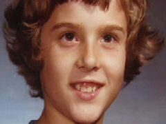

En mi humilde opinión, David Reimer nació con mala suerte. La circuncisión que lo dejó prácticamente castrado cuando bebé fue solo el comienzo en una espiral que culminó en tragedia. Lo demás, una sucesión de malas decisiones.
Los padres llevaron a David donde un médico llamado John Money, quien decidió tomar el caso del pequeño Reimer como prueba de que la identidad sexual no es innata sino que se adquiere del medio mientras crecemos. Vaya empresa para aquel inocente bebé y su familia.
Conocemos bien la batalla entre herencia y ambiente o innatismo y aprendizaje. Es decir, entre filosofías que aseguran que la biología ejerce más influencia en las personas que la crianza, o viceversa. Pues bien, Money pertenecía al viceversa y recomendó a los padres castrar completamente a David y criarlo como una niña sin decirle una palabra al respecto. Money estaba seguro de que el niño nunca sentiría diferencia alguna.
Esta dicotomía entre la herencia y el ambiente comenzó con Francis Galton en 1874, pero desde entonces, la magnitud del avance científico y tecnológico ha cambiado significativamente la idea actual, especialmente si tomamos en cuenta los progresos en la genética y la neurología. El conocimiento moderno ha conseguido manipular parte del cóctel cerebral que se encarga de nuestro humor para manejar con bastante efectividad la depresión, los cambios hormonales, las condiciones bipolares, el déficit de atención y hasta el control hormonal para aquellos que desean cambiar de sexo. El autismo y la esquizofrenia son algunas de las condiciones que se encuentran en la lista de afecciones cerebrales por combatir y sabemos que un porcentaje significativo de las enfermedades que padecemos está programado en nuestros genomas.
Por supuesto, el conocimiento que poseemos hoy es la herramienta más poderosa para invertir, si es posible, eso que está escrito en nuestra biología; la manipulación del medio en efectivos cambios de estilos de vida da resultado a la hora de contrarrestar el desarrollo de la mayoría de los casos de diabetes 2 e hipertensión, por ejemplo. Sin embargo, ¿es factible decir que la identidad sexual es como la diabetes?
Los padres de Brandon, pequeño protagonista de un artículo sobre niños transexuales en The Atlantic, pertenecen ambos al ejército estadounidense. El niño, hoy de ocho años, vive en un pequeño pueblo donde “lo diferente” no abunda y es imposible que haya copiado la conducta de algún lado; no obstante, desde que Brandon puede hablar su deseo predilecto es ser niña.
“Brandon, Dios te hizo niño por una razón especial”, imploró una vez la madre, sin pistas. La respuesta del niño, de entonces cinco años, no pudo ser más escueta: “Dios cometió un error”.
La búsqueda en Internet abrió nuevas puertas para la familia de Brandon. En la red descubrieron una enorme comunidad de padres con el mismo padecimiento, niños y niñas que, de acuerdo con ellos, nacieron “en el cuerpo equivocado”, junto a las distintas estrategias sobre cómo abordar el espinoso tema. La batalla entre la herencia y el ambiente resurge en este ámbito especial.
John Money escribió un libro sobre el éxito de David Reimer. Según el médico, el niño no podría estar mejor y se había adaptado completamente a su vida como fémina. Pero un periodista curioso descubriría la verdad: Reimer vivía una pesadilla y su depresión era tan intensa a los 14 años, que sus padres decidieron contarle la verdad.
«Brandon, Dios te hizo niño por una razón especial», imploró una vez la madre, sin pistas. La respuesta del niño, de entonces cinco años, no pudo ser más escueta: «Dios cometió un error».
Los padres de Brandon, por su parte, todavía no están seguros de cuál es su verdad. Desde que comenzaron a acudir a las reuniones de la comunidad sobre “Desorden de identidad sexual”, el niño es mucho más abierto a aceptar y demandar lo que realmente desea y hasta cambió su nombre a Bridget. Papá y mamá han decidido aceptarlo.
Pero es sólo un breve descanso del rutinario estrés (lo cambiaron de colegio para que comenzara una nueva vida como niña y los demás no se burlaran de él), la decisión magna llega con la pubertad y la pregunta ¿bloqueadores o no bloqueadores?
“El mayor órgano sexual no está entre las piernas sino entre las orejas”, asegura el doctor Milton Diamond, autor de “El cerebro femenino” y profesor de la Universidad de Hawai. “Si una niña se acerca a la pubertad y desea reprimir el crecimiento de sus senos, es una señal de transgenderismo, si siente alivio cuando los bloqueadores detienen el proceso, es la confirmación de que el diagnóstico era el correcto”, aseveró el especialista para The Boston Globe.
Aún así, muchos médicos temen que los padres estén tomando la ruta fácil en vez buscar una forma de transformar la situación con terapia conductual. El doctor Kenneth Zucker es uno de ellos. Su filosofía: la biología no es el destino.
“Si un niño negro de cinco años viene a mi oficina y me dice que desea ser blanco, ¿apoyaríamos tal cosa? Entonces no podemos hacer lo mismo aquí, creo que con suficiente terapia estos niños pueden acostumbrarse a vivir con el sexo anatómico con el que nacieron”.
No obstante, pertenecer a una raza no es lo mismo que desear poseer otros órganos sexuales, el funcionamiento de la identidad sexual es mucho más complejo que la adaptación a nuestros rasgos y al color de nuestra piel. De hecho, se trata del resultado de millones de años de evolución y está guiado por uno de los más fuertes impulsos sobre el planeta: la reproducción.

Para David Reimer, y millones como él, la solución no está ni en la establecida biología ni en el mero ambiente, más bien en una enmarañada coalición entre ambos donde lo innato lleva, más veces que no, las de ganar. Reimer perdió su sexo congénito, el indicado, y no supo adaptarse al que aprendió a tener. Desde que conoció la verdad, el muchacho decidió realizarse una faloplastia y más tarde se casó con una mujer. A los 38 años, Reimer se suicidó. El peso de la biología sí marcó gran parte de su destino.
Brandon/Bridget, por su parte, tiene toda una vida por delante. Para él, su biología dictó una identidad distinta a la anatómica y sus padres han descubierto una valiosa y deliciosa opción, algo que David nunca disfrutó.
La semana pasada, un equipo de científicos australianos publicó el descubrimiento de un receptor de un gen en transexuales que es mucho más largo que los del grupo control, decantando aún más la balanza hacia el lado de la biología y, quizá, facilitando un poco las cosas para los padres de Bridget, y cientos de miles más que, como ellos, bracean en la misma confusa situación.
Transexualismo
Los bloqueadores de la pubertad
“En Irán, la homosexualidad es castigada con la muerte pero las operaciones para cambiar de sexo son legales. Una forma de normalizar lo que para ellos son aberraciones”, escribió Hannan Rosin para The Atlantic. El doctor Norman Spack, endocrinólogo del Hospital de Niños en Boston y profesor de la Universidad de Harvard, está convencido de que los bloqueadores son la mejor arma contra el desorden de identidad sexual. Hasta el momento, ninguno de los adolescentes y preadolescentes que han tomado la decisión de detener la pubertad ha cambiado de opinión. “No es una decisión que se tome a la ligera, estos muchachos participan en muchas terapias, sus familiares también. Aún así, es sorprendente con la firmeza que toman esta decisión, como si no fuera una opción sino algo inevitable”, dijo.
Spack observó el programa por primera vez en Holanda. La doctora Peggy Cohen-Kettenis es la directora de la clínica holandesa que comenzó a dar los bloqueadores en el mundo, setenta niños habían sido tratados con estas drogas en los Países Bajos. Hasta ahora ninguno, aunque es posible, ha decidido revertir el proceso.
La madre de Brandon no está muy segura pero ha comenzado a llamarla Bridget y se siente más positiva luego de interactuar con los demás en la comunidad. Una de sus amigas, madre de otro niño/niña, le gusta referirse al problema de su hijo como “el desorden que curamos con una falda”. Y es que allí, entre otros como ella, es posible reírse de lo que hasta hace poco ellos consideraban una tragedia.
Volver al índice de la Lupa Herética
© 2008-2023 Glenys Álvarez y Sin Dioses. Prohibida la reproducción con fines comerciales.
Comentarios
Comments powered by Disqus